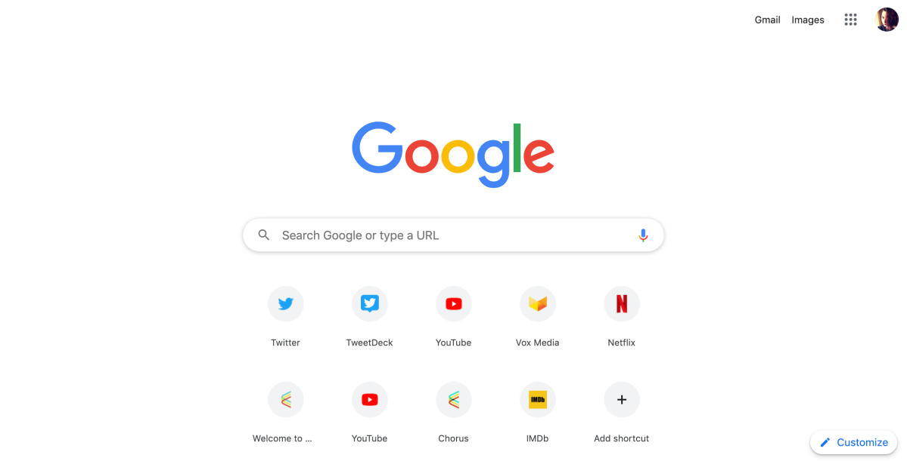
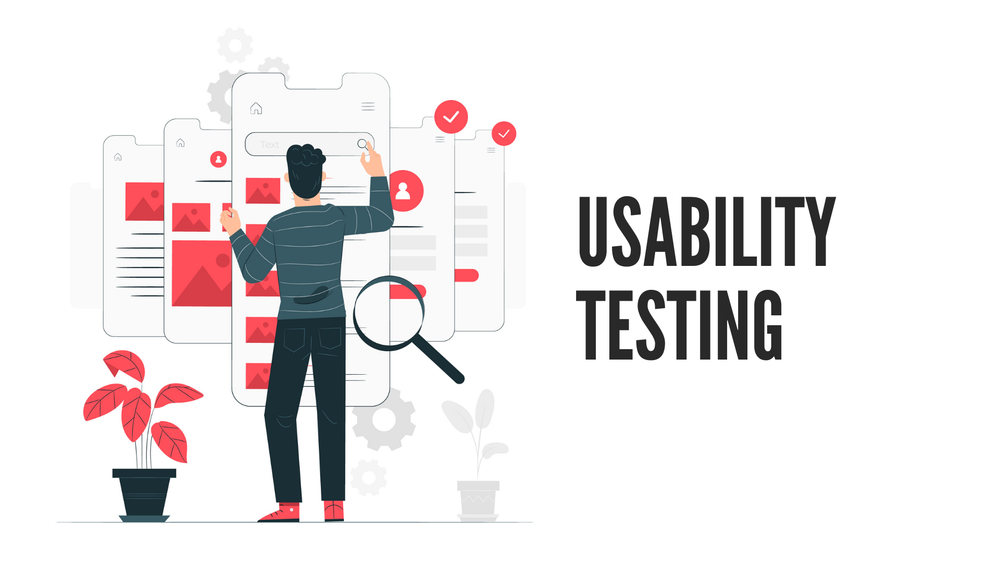

usability
Introduction to Usability
Usability refers to the ease with which a user can navigate and use a system, product, or service. It ensures that the design is intuitive, efficient, and satisfying for the user, facilitating the accomplishment of their goals.
The Five 'Es' of Usability
Effective
Effectiveness refers to the accuracy and completeness with which users achieve their goals. A system is effective when it allows users to accomplish their tasks correctly and completely.
Efficient
Efficiency measures the resources expended in relation to the accuracy and completeness of goals achieved. An efficient system enables users to perform tasks quickly and with minimal effort.
Engaging
Engagement refers to the degree to which users find the system pleasant and satisfying to use. An engaging system keeps users interested and motivated to continue using it.
Error Tolerant
Error tolerance refers to the system's ability to prevent errors and help users recover from errors that do occur. A system with high error tolerance minimizes the impact of mistakes and provides clear, constructive feedback.
Easy to Learn
Ease of learning measures how quickly new users can learn to use the system effectively. An easy-to-learn system has a gentle learning curve and intuitive design that allows users to become proficient with minimal instruction.
Good Design Example of Usability
Let's take a look at a well-designed example of usability: the Google Search homepage. Google's homepage is a prime example of an effective, efficient, engaging, error-tolerant, and easy-to-learn design.

- Effective: The search function is highly accurate and helps users find relevant information quickly.
- Efficient: The minimalist design ensures that users can perform searches with minimal effort and distractions.
- Engaging: The clean and simple interface is visually appealing and easy to use, keeping users coming back.
- Error-Tolerant: Google's search algorithm can handle typos and suggest correct spellings, improving the user experience.
- Easy to Learn: The intuitive design allows users of all ages and technical abilities to use the search function without needing instructions.
Improving Usability for Enhancing User Satisfaction and Engagement
Improving the usability of your website is crucial for enhancing user satisfaction and engagement. Here are some key points to consider:
- Understand Your Users: Conduct user research to understand their needs, preferences, and pain points. Design your website to address these factors.
- Clear and Intuitive Navigation: Ensure that users can easily find what they are looking for with a clear and logical navigation structure.
- Consistent Design: Use consistent design elements throughout your website to create a cohesive experience that users can quickly understand and navigate.
- Responsive Design: Design your website to be responsive, ensuring it works well on various devices and screen sizes, improving accessibility and usability.
- Fast Load Times: Optimize your website to load quickly, as slow load times can frustrate users and lead to higher bounce rates.
- Provide Feedback: Offer clear feedback for user actions, such as form submissions or button clicks, to confirm that their actions have been completed successfully.
- Accessibility: Ensure your website is accessible to users with disabilities by following accessibility guidelines (e.g., WCAG). This includes providing alt text for images, keyboard navigability, and sufficient color contrast.
- Test and Iterate: Continuously test your website with real users and make iterative improvements based on their feedback to enhance usability.
Guidelines for Creating a Usable Design
- Consistency: Maintain consistency in design elements such as color, typography, and layout across the interface to help users predict what will happen next.
- Feedback: Provide clear and immediate feedback for user actions to ensure they understand the result of their interactions.
- Simplicity: Simplify the interface by removing unnecessary elements and focusing on the essential functions to prevent overwhelming the user.
- Accessibility: Ensure the design is accessible to users with various disabilities by following accessibility standards (e.g., WCAG).
- User Control: Empower users by providing undo and redo options, allowing them to correct mistakes without frustration.
- Task-Oriented Design: Design interfaces to support the user's workflow and tasks, making it easier for them to accomplish their goals efficiently.
- Clear Navigation: Use clear and intuitive navigation structures to help users find what they need quickly and easily.
- Learnability: Ensure that new users can quickly understand how to use the system through intuitive design and minimal instructions.
Common Usability Testing Methods
- Heuristic Evaluation: Experts review the interface based on established usability principles (heuristics) to identify usability issues.
- Usability Testing: Observing real users as they interact with the interface to identify areas of confusion or difficulty.
- A/B Testing: Comparing two versions of a webpage or interface to determine which one performs better in terms of user engagement and satisfaction.
- Surveys and Questionnaires: Collecting user feedback through structured questions to gain insights into user satisfaction and areas for improvement.
- Card Sorting: A method used to understand how users categorize and organize information, helping to improve the structure and navigation of a website.
Examples of Usability Testing Tools

- UsabilityHub: A platform for conducting remote usability tests, including five-second tests, first-click tests, and navigation tests.
- Hotjar: A tool that provides heatmaps, session recordings, and feedback polls to understand how users interact with your website.
- Optimal Workshop: A suite of usability tools for card sorting, tree testing, and first-click testing to improve information architecture and user flow.
- UserTesting: A platform that allows you to get video feedback from real users as they interact with your website or app.
- Morae: A software for recording and analyzing usability tests, providing insights into user behavior and performance metrics.